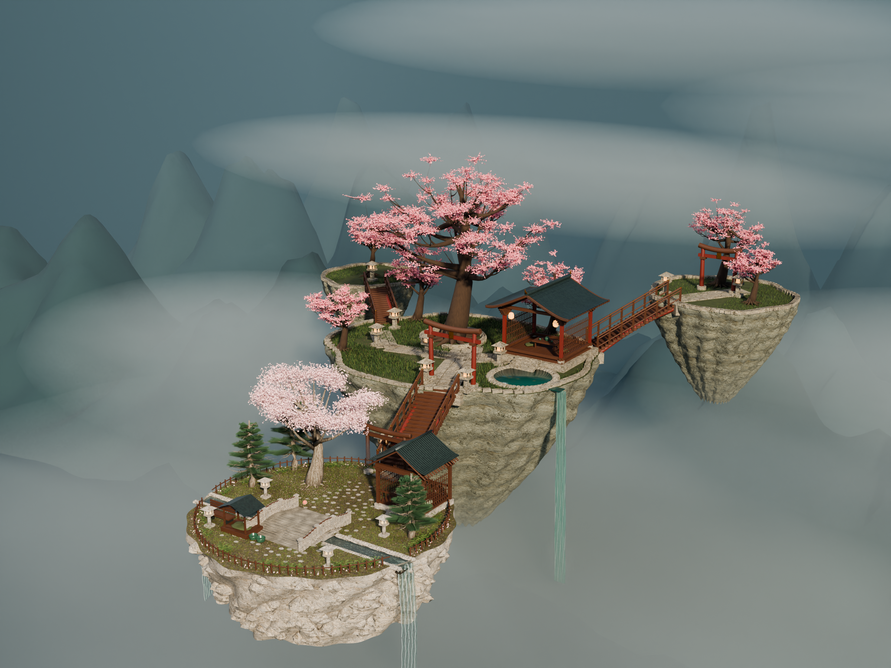
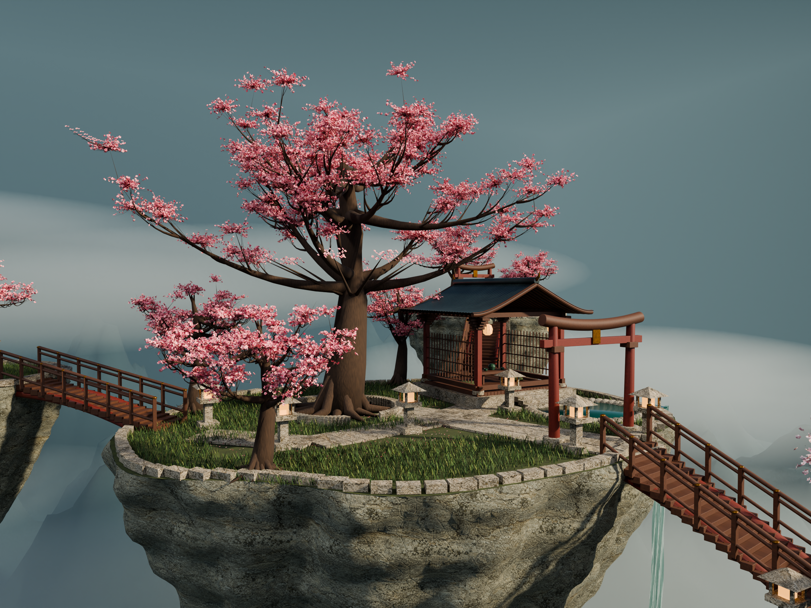
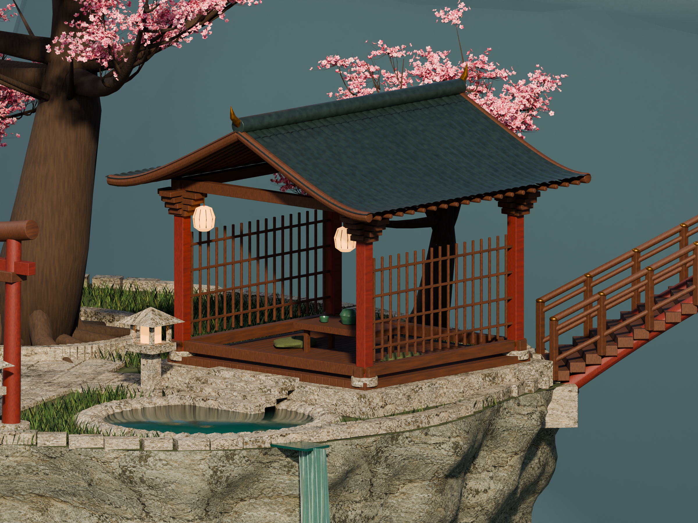
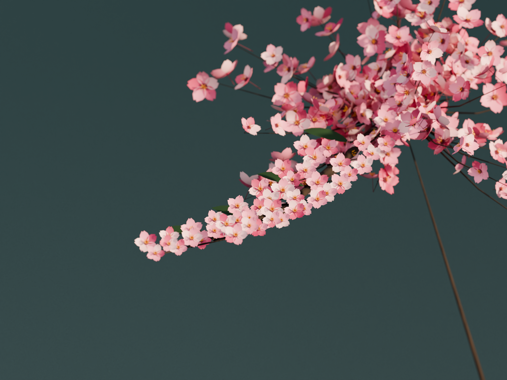
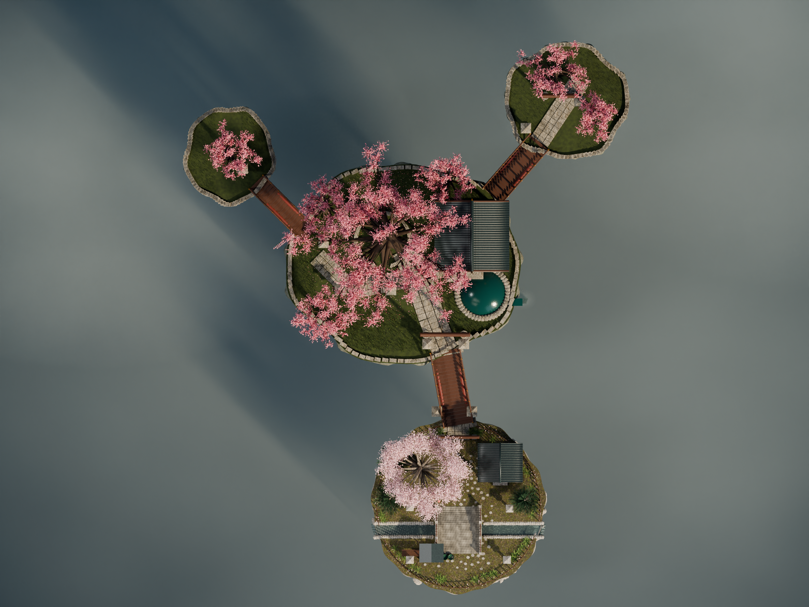
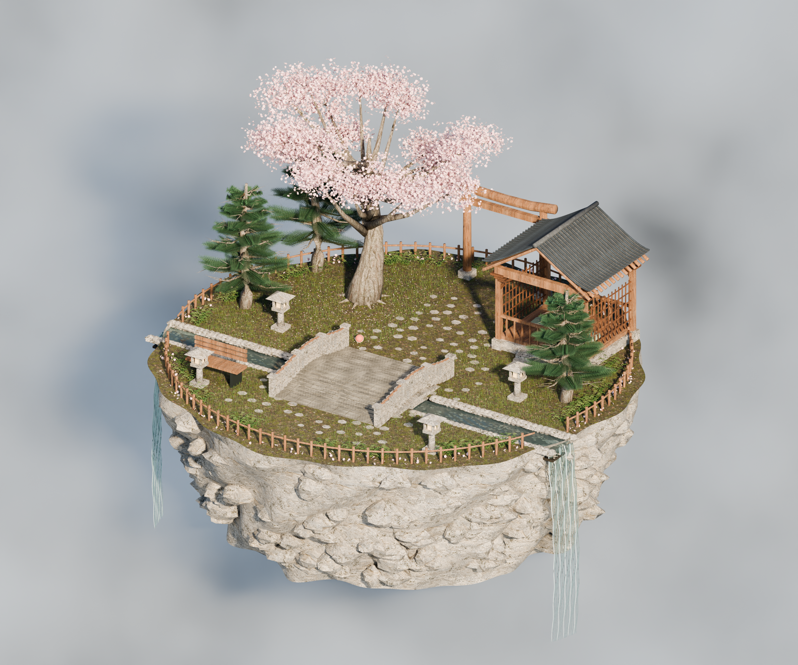

SPATIAL STORY
一条可以读懂的游览线
庭院抵达跨谷登阶樱门古树环台茶亭休憩云上远眺
COMPANION SCALE
壮阔之外，也能安静生活
前院保留小屋、软垫、食水碗与玩具；主路留出通行宽度，茶亭前后开放。美术中的路线标记已放进母版，后续还需在 Unreal 中配置碰撞、台阶判定与导航。




从原庭院到完整群岛


原版：一处生活庭院与单棵主树。

这是用于审阅的客户端离线美术母版。
以上均由 Blender Cycles 实际渲染，并非 AI 效果图。远山轮廓仍偏风格化，瀑布气泡线还有较均匀的重复感，后续继续自然化；本版不标记为写实验收通过。网页未替换、用户数据未读取。Unreal 材质转换、LOD、碰撞、导航与实时帧率尚未完成验证，不能把这些静帧作为客户端运行性能证明。
2400 × 1800 · 128 samples · Cycles / OptiX · editable .blend